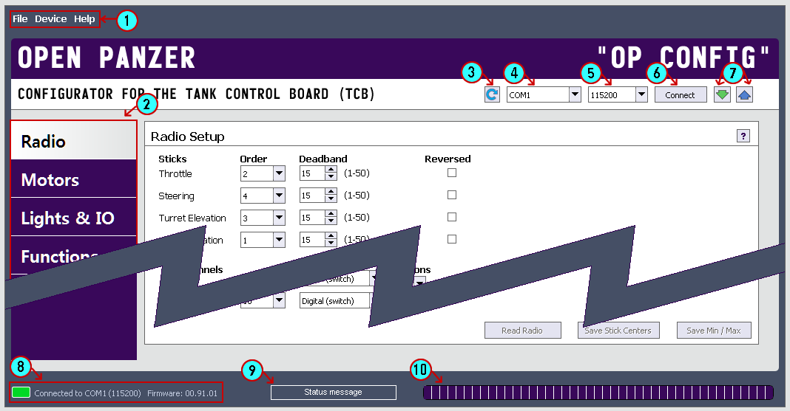

Program Layout

- Menu Bar: Use the File menu to save settings to and load settings from a file on the computer. The Device menu repeats the device connection controls (#3-7).
The Help menu will bring you to this help program. It will also offer you an option to Check for Updates to OP Config, and if any are available, install them.
- Tabs: Each tab holds a collection of settings - and each tab has a dedicated page in this help file.
- COM Refresh Button: Click to refresh the list of available COM ports.
- COM Port List: List of available COM ports.
- Baud Rate List: Select the baud rate. For direct connection with USB cable, the TCB default rate should be 115200.
- Connect Button: Attempt to connect to the TCB.
- Device Read/Write Buttons: After you have established a connection with the TCB, you can click the green arrow pointing down to read settings from the TCB. Click the blue arrow pointing up to write settings to the TCB.
- Serial Status: This will always show the current serial port connection status. If the port is open and the communication with the TCB is established, the TCB's firmware version will also appear.
- Info Area : Temporary confirmation or warning messages will appear here.
- Progress Bar: This bar will show the progress when reading or writing settings to the TCB.